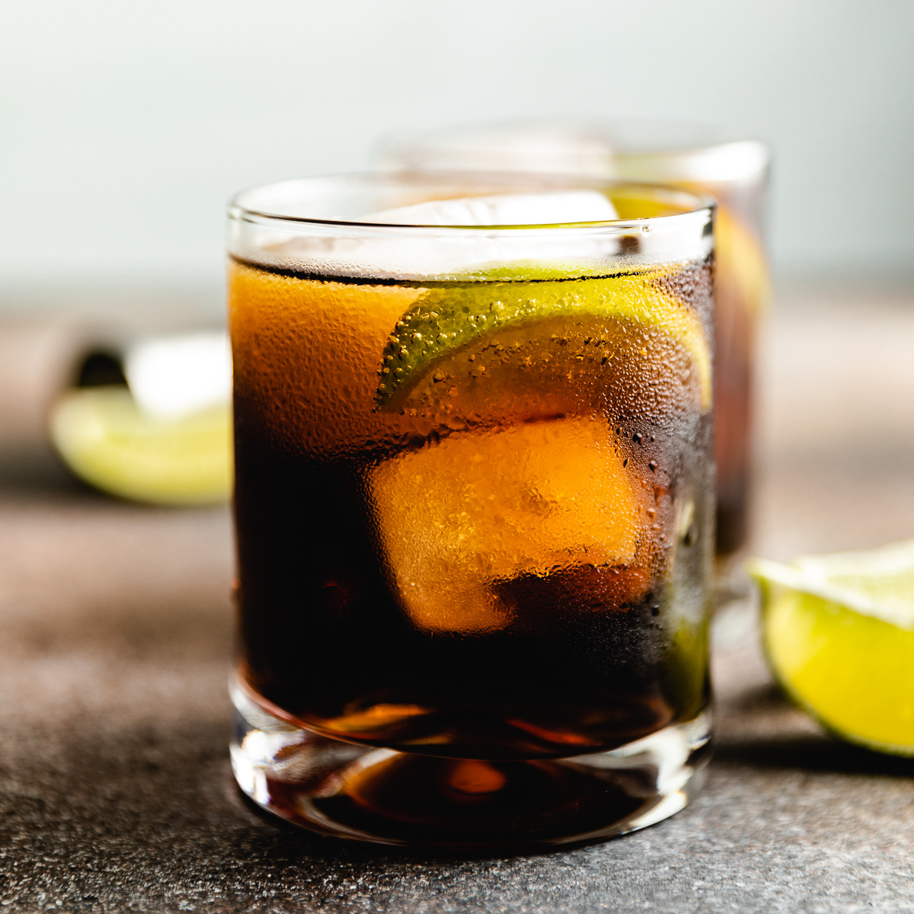

The rum and coke is a classic drink enjoyed by college students that shouldn't be drinking it yet (in the US)
and our elders that still enjoy this simple classic. Assuming that Coca-Cola outlives most of us this drink will
continue to be enjoyed by our future generations for eternity.
- 44ml - 66ml Rum (Kraken is the house favorite)
- 3 cubes of ice
- 10 oz of Coca-Cola (plain is the house favorite)
- Take your glass and add the cubes of ice then pour the rum over the ice. Swirl for dramatic effect and to create an aroma that is magical
- Pour in your Coca-Cola to fill the glass (stop 1.5in from the top)
- Taste and adjust with more rum as needed
- Garnish with nothing and enjoy